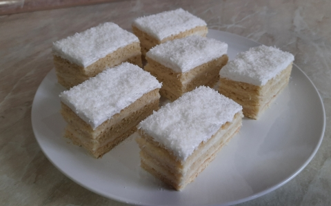

A Raffaello szelet, vagy más néven a kókuszos krémes egy igazán könnyed, kókuszos sütemény.

Hozzávalók egy 30*40 cm-es tepsihez:
A tésztához:
3 FUCHS SZABADTARTÁSOS TOJÁS sárgája
150 g cukor
200 g margarin
2 dl tejföl
1 cs sütőpor
510 g liszt
A krémhez:
500 ml tej
4 ek búzadara
200 g vaj
150 g cukor
A tetejére:
3 FUCHS SZABADTARTÁSOS TOJÁS fehérje
150 g cukor
100 g kókuszreszelék
Elkészítése
Egy mélyebb edénybe belerakjuk a tojások sárgáját, hozzáadjuk a cukrot és habosra keverjük, majd külön keverjük hozzá a puha margarint és a tejfölt is. Azután adjuk hozzá a lisztet lassan adagolva és a sütőport. Mivel ragadós a tészta, gyúrás közben folyamatosan lisztezzük a kezünket és a tésztát is. Ha alaposan összegyúrtuk, 3 egyenlő részre osztjuk a tésztát.
Egy kb 30*40 cm-es tepsi hátoldalát belisztezünk, majd egyesével kinyújtjuk rajta a tésztát és 180 fokon kb 8 percig sütjük.
A krémnek megfőzzük a búzadarát a tejben és hagyjuk kihűlni. A vajat a cukorral habosra keverjük, majd a kihűlt krémhez fokozatosan hozzáadjuk. A kész krémet kétrészre osztjuk.
Az egyik felével megkenjük az egyik lapot és elsimítjuk, majd ráhelyezzük a második lapot a krémre. Rárakjuk a krém másik felét, elsimítjuk, majd a harmadik lapot is rátesszük.
A tetejére tojásfehérjéből gőz fölött kemény habot verünk a cukor folyamatos hozzáadásával. Amikor kemény a tojáshab, rárakjuk a tésztára és megszórjuk kókuszreszelékkel.